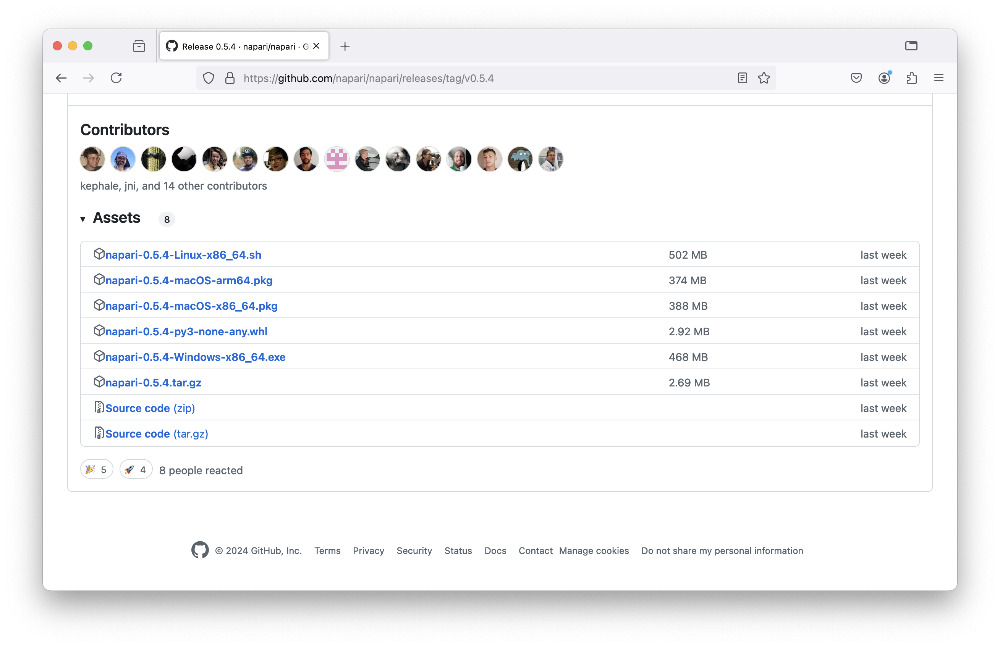
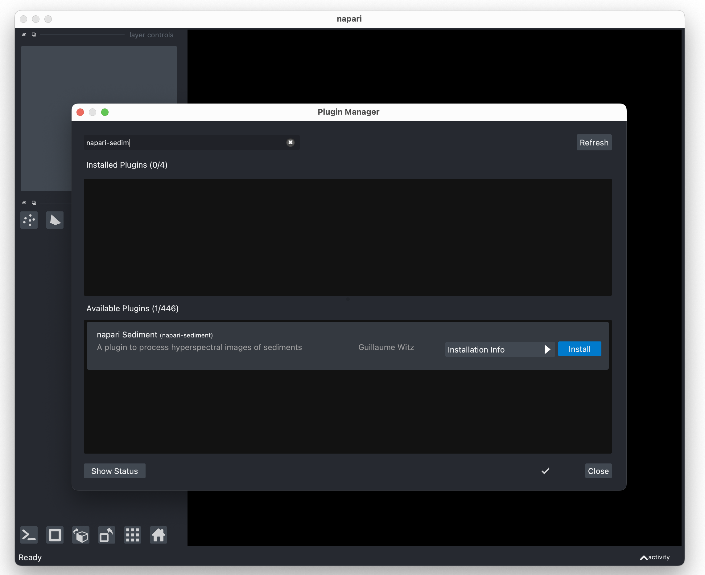

Installation#
napari-sediment is a plugin for napari, a Python based image viewer. Installation proceeds in two steps: first install napari, then install the napari-sediment plugin.
napari installation#
There are two way to install napari: as a standalone application or as a Python package. The standalone application is the easiest way to get started, but if you plan to use napari in combination with other Python packages, you should install it as a Python package.
Standalone application#
You can install napari via installers that can be found on the GitHub release page of napari. Pick a version and scroll down to the bottom of the page where you will find installers for Windows, MacOS and Linux. Here’s an example for napari 0.5.4:

Beware that the installation process can take a few minutes. Once the software is installed, you can start it from the start menu (Windows) or find it in <your home directory>/Applications on MacOS.
Python package#
If you plan to use napari in combination with other Python packages, you should install it as a Python package. We strongly recommend to use an isolated environment for this purpose, as typically provided by conda:
conda create -n napari_sediment python=3.11 napari pyqt
napari-sediment installation#
napari-sediment is a Python package which is available on the PyPI repository. It is listed as a napari plugin and can be installed via the built-in napari plugin manager. To do that, start napari and open the plugin manager via the menu Plugins -> Install/Uninstall Plugins. There, search for napari-sediment and click on the install button as shown here:

If you prefer to install the plugin via the command line, you can do so by running:
pip install napari-sediment